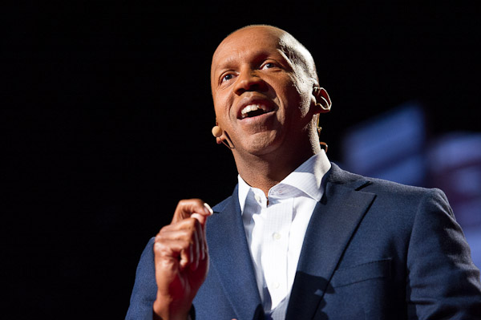

Bryan Stevenson
The man who dedicated his life to serving those on death row

Caption: Bryan Stevenson, TED Talk 2012: We Need To Talk About Injustice. Stevenson speaks on the criminal justice system in The United States, which now has the highest rate of incarceration in the world.
Just some of Stevenson's achievements...
- Lawyer, social justice activist, found/executive director of Equal Justice Initiative, and a clinical professor at New York University School of Law
- Helped achieve United States Supreme Court decisions that prohibit sentencing children under 18 to death or life imprisonment without parole
- Has worked on numerous cases that saved dozens of prisoners from the death penalty, adovated for the poor and developed community-based reform itigation aimed at improving the adminstration of criminal justice
- Awarded the Benjamin Franklin Award from the American Philosophical Society
- Worked with an African-American history group to gain sponsorship and gained state approval for three historical markers of the history of slavery
- Aquired six acres of former public housing land in Montgomery for the National Memorial for Peace and Justice to commemorate the nearly 4,000 persons who were lynched in the South from 1877 to 1950, opened April 2018
- Associated with the Memorial is the Legacy Museum: From Enslavement to Mass Incareceation, also opened April 2018, exhibits include materials on lynching, racial segregation and mass incarceation since the 20th century
- Wrote the critically acclaimed memoir Just Mercy: A Story of Justice and Redemption, which won the 2015 Andrew Carnegie Medal for Excellence in Nonfiction and the 2015 Dayton Literary Peace Price for Nonfiction